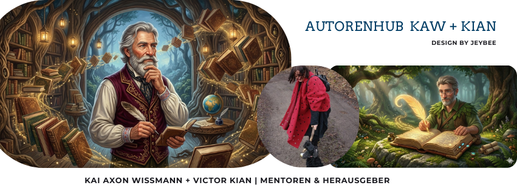

Karlsruhe im 18. Jahrhundert. Wenn das Recht der Lebenden versagt, schlägt die Stunde der weißen Laken – mit Champagner im Glas und Sarkasmus auf den Lippen...
Status: In Bearbeitung im Autoren-Duo.
Hörst du sie schon? Die Geister von Karlsruhe sind erwacht. Sie tragen Pailletten, rauchen Zigarren und haben keine Geduld für Mörder. Sie lauern unter deinen Füßen und wissen mehr, als man einem Kieselstein zutrauen würde.
GeisterstundeBand 1 & 2 stehen bereit.
Vergessen Sie das klassische weiße Laken. Unsere Geister sind flüssig, innovativ und gefährlich ehrlich. Erleben Sie Karlsruhe durch die Augen jener, die unter der Oberfläche lauern.
🔊 Hörprobe: Victor Kian
„Die Wellen Karlsruhes in seiner Stimme.“
🔊 Die Stimme: Kai A. Wissmann
„Tauchen Sie ein in die Atmosphäre unserer Wassergeister.“
Kai A. Wissmann & Viktor Kian: Wenn poetische Tiefe auf messerscharfe Erzählkunst trifft. Wir erwecken das barocke Karlsruhe zum Leben – inklusive der Geister, die dort noch eine Rechnung offen haben.

G.R. Immen | Savani von Vaske | Eleonor Nike-Berde
Schreiben Sie uns, bevor es die Geister tun!
Flaschenpost senden